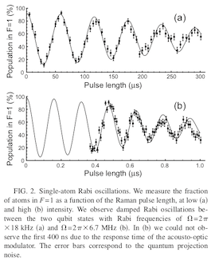

This page was generated from `source/notebooks/L2/Lecture 2.ipynb`_.

Lecture 2¶
Frank Cichos (2018,2019,2020)
[1]:
import numpy as np
import matplotlib.pyplot as plt
%matplotlib inline
%config InlineBackend.figure_format = 'retina'
plt.rcParams.update({'font.size': 16,
'axes.titlesize': 16,
'axes.labelsize': 14,
'axes.labelpad': 14,
'lines.linewidth': 1,
'lines.markersize': 10,
'xtick.labelsize' : 14,
'ytick.labelsize' : 14,
'xtick.top' : True,
'xtick.direction' : 'in',
'ytick.right' : True,
'ytick.direction' : 'in',})
from IPython.core.display import HTML
HTML("""
<style>
.output_png {
display: table-cell;
text-align: center;
vertical-align: middle;
}
</style>
""")
[1]:
Light scattering¶
Scattering is a general physical process where some forms of radiation, such as light, sound, or moving particles, are forced to deviate from a straight trajectory by one or more paths due to localized non-uniformities in the medium through which they pass. In the context of light, this refers to the deviation of the light path due to inhomogeneities in the density of the medium. The scattering process can be either an
elastic scattering - no change in photon energy
inelastic scattering - change in photon energy
process. A typical example for elestic scattering is Rayleigh Scattering, which is the classical theory of scattering on subwavelength particles. On te other hand, Raman scattering or Brillouin scattering are examples of inelastic scattering where the electromagnetic wave exchanges energy with a medium (phonons or acoustic waves).
We will refere in the following lectures mainly to elastic scattering and start with the smallest system, i.e. the scattering of light by an atom. Later we come to extended dielectric and metallic systems, which increasingly show the effect of collective excitations in the system.
Light Scattering from a Two Level System - Part 1¶
The first two lecture shall comprise a short description of the interaction of light with a simple model of an atom, which is the two level system. We want to develop our understanding of light scattering from this very fundamental level up to Rayleigh and Mie scattering, that we at least know the physical background. The understanding of the two level system is also very useful for applications in quantum manipulation and quantum information processing.
\begin{equation} i \hbar \frac{\partial \Psi({\bf r},t)}{\partial t}=\hat{H}\Psi({\bf r},t) \end{equation}
The atomic wave function can be written at any time \(t\) as
\begin{equation} \Psi({\bf r},t)=c_{g}|g\rangle+c_{e}|e\rangle e^{-i\omega_{0}t} \end{equation}
with the Hamiltonian \(\hat{H}=\hat{H}_{0}+\hat{V}\), where \(\hat{H}_{0}\) is the Hamiltonian of the unperturbed atom with the eigenstates \(|g\rangle\) and \(|e\rangle\).The energy difference between the two states is entering a time dependent phase factor with the frequency corresponding to the transition frequency \(\omega_{0}\). \(\hat{V}=\hat{d}\cdot\hat{E}\) is the interaction of the atomic (transition) dipole with the light field \(\hat{E}=\hat{\epsilon} E_{0}\cos({\bf k}{\bf r}-\omega t)\).
Substituting 2 into 1 yields two coupled differential equations for the coefficients \(c_{g}(t)\) and \(c_{e}(t)\).
\begin{equation} i\hbar\frac{dc_{g}}{dt}=c_{e}\langle g|\hat{d}\cdot \hat{E}|e\rangle e^{-i\omega_{0}t} \end{equation}
\begin{equation} i\hbar\frac{dc_{e}}{dt}=c_{g}\langle e|\hat{d}\cdot \hat{E}|g\rangle e^{+i\omega_{0}t} \end{equation}
Equations 3 and 4 leads us to the definition of a key parameter for atom light interactions. The Rabi frequency
\begin{equation} \Omega=\frac{E_{0}}{\hbar}\langle e|\hat{d}\cdot \hat{\epsilon}|g\rangle \end{equation}
describes the strength of the coupling between the atom and the electric field. It increases with increasing intensity, and for a given intensity it is dependent on the atomic states and the polarization through the dipole matrix element. The coupled equations 3 and 4 can now be written as
\begin{equation} i\hbar\frac{dc_{g}}{dt}=c_{e}\hbar\Omega\left( \frac{e^{i(\omega-\omega_{0})t}+e^{-i(\omega+\omega_{0})t}}{2}\right) \end{equation}
\begin{equation} i\hbar\frac{dc_{e}}{dt}=c_{g}\hbar\Omega\left( \frac{e^{i(\omega+\omega_{0})t}+e^{-i(\omega-\omega_{0})t}}{2}\right) \end{equation}
where we have used the exponential form of \(\cos(\omega t)\). Up to this point, the treatment, within the approximation of only two energy levels, has been exact. We now make an important approximation that is known as the Rotating Wave Approximation. We assume that terms like \(e^{-i(\omega+\omega_{0})t}\) that oscillate at roughly twice the frequency of the driving field can be eliminated, as their time dependence averages out over the much slower timescale of the evolution of the coefficients \(c_g\) and \(c_e\).
We introduce the other key parameter for atom-light interactions: the detuning \(\Delta=\omega-\omega_0\) which, along with the Rabi frequency, will control the time evolution of this system. The two coupled equations can now be written
\begin{equation} i\hbar\frac{dc_{g}}{dt}=c_{e}\hbar\Omega^{*}\frac{e^{i\Delta t}}{2} \end{equation}
\begin{equation} i\hbar\frac{dc_{e}}{dt}=c_{g}\hbar\Omega\frac{e^{-i\Delta t}}{2} \end{equation}
The easiest way to solve these equations is to differentiate again with respect to \(t\) and to substitute the corresponding other first derivative to yield the following pair of (uncoupled) equations for the coefficients:
\begin{equation} \frac{d^2c_{g}}{dt^{2}}-i\Delta \frac{dc_{g}}{dt}+\frac{\Omega^2}{4}c_{g}=0 \end{equation}
\begin{equation} \frac{d^2c_{e}}{dt^{2}}+i\Delta \frac{dc_{e}}{dt}+\frac{\Omega^2}{4}c_{e}=0 \end{equation}
Rabi oscillations¶
If we assume that at \(t=0\), \(c_g =1\) and \(c_e =0\),then equations 10 and 11 can be solved to give the following expression for the probability to be in the excited state \(|c_e(t)|^2\)
\begin{equation} |c_{e}(t)|^{2}=\frac{\Omega^2}{\Omega^{\prime 2}}\sin^{2}\left[\frac{\Omega^{\prime}t}{2} \right] \end{equation}
with
\begin{equation} \Omega^{\prime}=\sqrt{\Omega^{2}+\Delta^{2}} \end{equation}
as the generalized Rabi frequency.
[2]:
d=1
E=2
Omega=d*E
def c_e(Omega,Delta,t):
Omega_p=np.sqrt(Omega**2+Delta**2)
return((np.sin(Omega_p*t/2)**2)*(Omega/Omega_p)**2)
t=np.linspace(0,10,1000)
plt.figure(figsize=(10,4))
plt.plot(t,c_e(Omega,0,t),label='$\Delta=0$')
plt.plot(t,c_e(Omega,1,t),label='$\Delta=1$')
plt.plot(t,c_e(Omega,3,t),label='$\Delta=5$')
plt.xlabel('time')
plt.ylabel('$|c_{e}|^2$')
plt.legend(bbox_to_anchor=(1.04,1), loc="upper left")
plt.title('excited state population')
plt.show()

Accordingly, the excited state population undergoes oscillations with the Rabi frequency, which is determined by the electric field strength of the incident light. At a detuning of \(\Delta=0\) the system can be trnsferred completly into the excited state and back i.e. the excited state population reaches \(|c_{e}|^2=1\). In the case of a non-zero detuning. There is still a probability to excite the two level system, only with a lower probability. Note also that the frequency of the Rabi oscillation changes
with the detuning
with the laser electric field amplitude (or the intensity)
which can be also shown in experiments such as for Rubidium atoms in a an atomic trap.

[ ]: